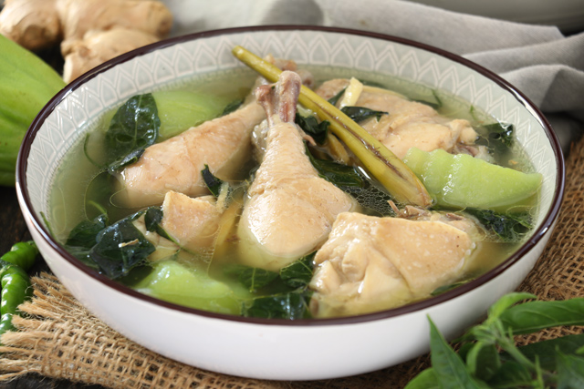

Chicken Tinola ( Tinolang Manok )
Ingredients
- Chicken pieces
- Ginger
- Garlic
- Onions
- Fish sauce
- Chayote (sayote) or unripe papaya
- chili leaves or moringa (malunggay)
How to cook Tinolang Manok
- Saute ginger, garlic, onions in hot oil until aromatic.
- Add the chicken pieces and fish sauce and render until fats and juices come out.
- Pour in water and bring to boil. Cook until meat is tender.
- Add the sayote or green papaya and cook until soft.
- Lastly, add the chili or malunggay leaves.

Find other Recipes and more ingredients here with "Allrecipes"